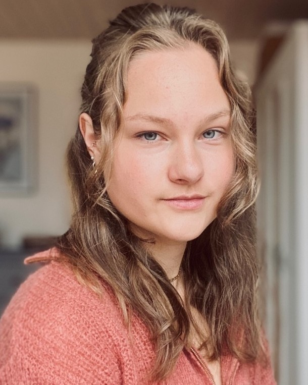

Unser Team
Julian Klink

Michael Pichlmeier

In einem dystopischen Szenario befindet sich die Protagonistin Ava im Jahre 2050 wieder. Menschen, Tiere und Pflanzen sind auf der Erde durch die Klimakatastrophe mittlerweile größtenteils ausgestorben. Als Spieler:in findet man sich zu Beginn des Spiels in einer Overworld wieder, in der die umgebende Umwelt ausgetrocknet und das Wasser verseucht ist. Über Portale kann sich Ava in die Vergangenheit teleportieren und so in Minispielen die Welt retten. Schließt man als Spieler:in ein Minispiel erfolgreich ab, gelangt man erneut in die Overworld, in der sich die Umwelt nach und nach erholt. Insgesamt gibt es 3 Minispiele zu bewältigen, bis Ava die Welt im Jahr 2050 erfolgreich gerettet hat.
2050: Die Politik und die Menschheit haben versagt, das 1,5 Grad Ziel wurde weit verfehlt. Wir haben eine Erwärmung von 2,4 Grad Celsius. Natur und Zivilisation sind zerstört. 80% der Tiere sind ausgestorben, es leben nur noch krebsartige Tiere und Einzeller im plastikverseuchten Meer.
Eines Tages bekommt Ava eine Nachricht von einem Unbekannten:
„Ava, du bist die Auserwählte. Ich habe eine Nachricht an die Menschheit von vor 30 Jahren geschickt, sie wissen, dass du kommen und ihnen helfen wirst. Ich habe Portale errichtet, durch die du in verschiedene Szenarien im Jahr 2022/2023 reisen und etwas verändern kannst.
Als Belohnung werden sie dir Dinge mitgeben, die bei uns in der Zukunft schon längst verloren gegangen sind. Damit wirst du die Welt wieder heilen und somit alle Zeitdimensionen Vergangenheit, Gegenwart und Zukunft retten können.“
Unser Planet ist zu zwei Dritteln mit Wasser bedeckt und trotzdem herrscht eine akute Wasserknappheit. Nur 3% der weltweiten Wasservorräte sind trinkbares Süßwasser.
Dürreperioden sind schon lange nicht mehr nur in Entwicklungsländern ein Problem. Im Sommer 2022 wurde in fünf Regionen Norditalien der Notstand ausgerufen. Vor allem die Regionen um den Fluss Po sind betroffen. Sämtliche landwirtschaftliche Produkte wie Mais, Reis, Soja und Getreide sind von Ernteausfällen betroffen.
Einer der wichtigsten Punkte, die man gegen Wassermangel tun kann, ist es Wasser zu sparen. Bauern, die Regenwasserauffangsysteme gebaut haben, sparen viel Wasser und haben Speicher, die sie in Dürreperioden zur Bewässerung einsetzen können. Aktuell nutzt Italien nur 11% Regenwasser. Das kann noch verbessert werden. Auch im eigenen Haushalt spart man Wasser, indem man Pflanzen mit Regenwasser gießt.
Durch dieses Portal reist du nach Norditalien. Sammle Regenwasser, um die Speicher der Bauern dort aufzufüllen. Als Belohnung erhältst du sauberes Wasser für die Welt in der Zukunft.
Herzlichen Glückwunsch, Ava! Die Bauern bedanken sich für deine Hilfe. Du erhältst sauberes Wasser für deine Welt. Das ist der erste Schritt, damit dein Land wieder heilen kann. Deine Gewässer werden sich erholen und im Zusammenspiel mit der Umgebung wird das Land wieder fruchtbar werden. Spiele das nächste Minigame um Sprösslinge für dein Land zu bekommen.
August 2019: Innerhalb von 5 Tagen verbrennen 471.000 Hektar Wald, Weiden und Felder im Amazonas.
Auslöser ist die derzeit herrschende Dürre und Brandlegung des Menschen.
Landwirte führen Brandrodungen durch um Felder für Rinder-Farmen und für den Sojaanbau, der als Tiernahrung gebraucht wird, zu gewinnen, oft auch illegal in Naturschutzgebieten. Die Brände geraten aufgrund der allgemeinen Trockenheit außer Kontrolle und sind nur schwer zu stoppen.
Vor allem in Brasilien ist das ein Problem. 2023 so viel Wald wie schon lange nicht mehr und die Regierung unterstützt und fördert die Brände sogar.
Weil der Regenwald im Amazonasgebiet riesige Mengen CO2 binden kann, hat er auch für das Weltklima große Bedeutung.
Um den Amazonas zu retten, müssen weiter Schutzgebiete errichtet werden, indigene Völker in ihren Rechten gestärkt werden und moderne Wissenschaft und Forschung im Bereich der Walderhaltung eingesetzt und weiterentwickelt werden.
Es gibt bereits großartige Organisationen, die sich dafür einsetzen und Kontakte haben, damit sie ihre Arbeit machen können und möglichst viele Ressourcen bestmöglich einsetzen können, sind sie auf Spenden angewiesen.
Du reist in den Amazonas. Der Wald brennt. Fliehe vor dem Feuer und sammle so viel Geld wie möglich, um die Organisationen „Save the Amazonas“ zu unterstützen und die „grüne Lunge“ zu retten. Als Belohnung erhältst du Baumsprösslinge, um dein Land wieder zu bepflanzen.
Herzlichen Glückwunsch! Die Organisation dankt dir für deine Hilfe. Du erhältst Waldsprösslinge für deine Welt. Sehr gut, Ava, deine Böden sind durch reichliches und sauberes Grundwasser wieder fruchtbar. Die Organisation „Save the Amazonas“ setzt bereits selbst Sprösslinge zur Aufforstung ein. Jetzt kannst du dein Land auch wieder bepflanzen. Damit kannst du die CO2 Verarbeitung verbessern und dem Klima in deiner Welt Gutes tun. Durch sauberes Wasser, gesunden Pflanzen und damit einem verbesserten Klima, wirst du wieder Lebensraum für Tiere schaffen. Spiele das nächste Minigame um einen Bienenstock zu bekommen. Damit kannst du ein funktionierendes Ökosystem in deiner Welt aufbauen.
Die biologische Vielfalt entscheidet über die Zukunft der Menschen. Sauberes Trinkwasser, fruchtbare Böden, unsere Ernährung und Gesundheit, unsere Wirtschaftslage, hängt alles von einem gesunden Ökosystem mit zahlreichen Tier- und Pflanzenarten ab. Inzwischen sind ca. eine Millionen Tiere vom Aussterben bedroht. 2050 sind die meisten bereits ausgestorben, die Ökosysteme leiden und treiben den Klimawandel voran. Noch mehr Schutzgebiete hätten errichtet werden müssen. Stattdessen wurde immer mehr Land zerstört, wie zum Beispiel der Hambacher Forst, der inzwischen die größte Baunkohlegrube Europas ist.
In einem restlichen kleinen Waldstück lebt die Fledermaus Frank. Im Hambacher Forst ist es ihm zu unsicher, er möchte in das Naturschutzgebiet im Königsforst um sicher weiterleben zu können. Dafür muss er allerdings durch Köln hindurchfliegen. Helfe Frank sicher durch die Stadt zu kommen. Als Belohnung erhältst du einen Bienenstock.
Herzlichen Glückwunsch! Die Naturschützer des Königsforsts sind dankbar, dass du Frank sicher zu ihnen gebracht hast. Sie schenken dir einen kleinen Bienenstock mit 10 Bienen für die Zukunft.
Bienen sorgen für die Bestäubung unzähliger Pflanzen und damit für den Erhalt von Ökosystemen. Die Nahrungskette kann durch sie aufrechterhalten werden und Tiere und Pflanzen reichhaltig ernährt werden.
In der Zukunft gibt es schon lange keine Bienen mehr. Nimm diesen Bienenstock mit, Ava. Mögen sie sich fleißig vermehren und die Artenvielfalt wieder herstellen.